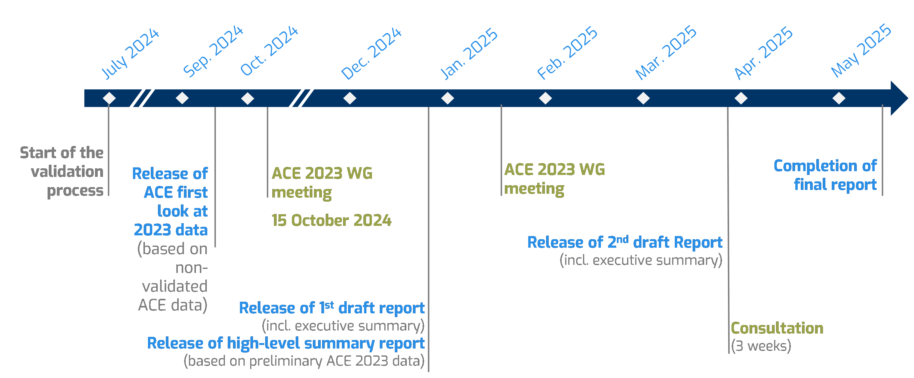

| Airnav Ireland ✔️ (Ireland) |
Croatia Control (Croatia) |
Fintraffic ANS (Finland) |
MATS (Malta) |
ROMATSA (Romania) |
| Albcontrol (Albania) |
DCAC Cyprus (Cyprus) |
HASP (Greece) |
MOLDATSA ✔️ (Moldova) |
Sakaeronavigatsia ✔️ (Georgia) |
| ANS CR (Czech Republic) |
DFS ✔️ (Germany) |
HungaroControl ✔️ (Hungary) |
MUAC (EUROCONTROL) |
skeyes ✔️ (Belgium) |
| ARMATS (Armenia) |
DHMI ✔️ (Türkiye) |
LFV ✔️ (Sweden) |
NATS (Continental) ✔️ (United Kingdom) |
Skyguide ✔️ (Switzerland) |
| Austro Control (Austria) |
DSNA (France) |
LGS ✔️ (Latvia) |
NAV Portugal (Continental) (Portugal) |
Slovenia Control (Slovenia) |
| Avinor (Continental) (Norway) |
EANS ✔️ (Estonia) |
LPS (Slovakia) |
NAVIAIR ✔️ (Denmark) |
SMATSA (Serbia/Montenegro) |
| BHANSA ✔️ (Bosnia and Herzegovina) |
ENAIRE ✔️ (Spain) |
LVNL (Netherlands) |
Oro Navigacija ✔️ (Lithuania) |
|
| BULATSA (Bulgaria) |
ENAV ✔️ (Italy) |
M-NAV (North Macedonia) |
PANSA (Poland) |
|
| ✔️ Data submission has been reviewed | ||||
1 Introduction
The ACE benchmarking work is commissioned by the Performance Review Commission (PRC) and carried out by the EUROCONTROL Performance Review Unit (PRU) using information provided by Air Navigation Services Providers (ANSPs) in compliance with Decision No. 88 of the Permanent Commission of EUROCONTROL on economic information disclosure1.
The data processing, analysis and reporting are conducted with the assistance of the ACE Working Group, which comprises representatives from participating ANSPs, airspace users, regulatory authorities and the Performance Review Unit. This enables participants to share experiences and establish a common understanding of underlying assumptions and data limitations.
The objective of this document is to provide a first insight on the level of 2024 cost-effectiveness performance both for the Pan-European system and for individual ANSPs before the release of the final ACE benchmarking report, which is planned end of May 2026. This document also presents financial indicators extracted from the ANSPs Financial Indicators Dashboard and monitoring ANSPs’ cash holdings and liquidity.
Economic information disclosure by ANSPs takes time as it depends on the publication of their financial statements, which can be a lengthy process. Indeed, after the finalisation of their financial accounts, ANSPs have to follow official procedures which include, inter alia, the preparation of an independent audit report and the formal approval for publication which is granted by the relevant authorities (sometimes at Ministry level). This explains the lag between the review of the 2024 operational performance presented in the Performance Review Report (published in March 2025) and the publication of this document in December 2025. It should be noted that operational conditions continued to evolve in 2025, and ATFM delay performance has improved for several of ANSPs.
The final ACE benchmarking report will provide more detailed information on observed changes for selected performance indicators both at Pan-European system level and at ANSP level. This detailed analysis will particularly focus on ANSPs for which significant differences in costs are observed. The report will present the main drivers underlying these differences.
Figure 1.1 illustrates the timeline to produce the next ACE benchmarking report.

It is important that robust ACE benchmarking analysis is available in a timely manner since several stakeholders, most notably ANSPs’ management, regulatory authorities (e.g. NSAs) and airspace users, have a keen interest in receiving the information in the ACE reports as early as possible.
Twenty out of 38 ANSPs submitted their ACE 2024 data on time by the 1st of July 2025 and all data submissions were received by the end of September 2025. The timescale to produce the ACE benchmarking report is inevitably delayed if data are not submitted on time.
It should be noted that the data presented in this document are still preliminary and not yet fully validated. Indeed, the data submission milestone is just the first step of a process which comprises a thorough verification and analysis of individual ANSP submissions. This validation exercise also includes a formal round of exchange between the PRU and each ANSP in order to ensure a common understanding of the data submitted by the ANSP.
The data used in this document reflects the information received by the 12th of November 2025. Figure 1.2 shows the status of the ACE data validation process for the data presented in this document.
The data contained in this report is therefore subject to changes before the release of the final ACE benchmarking report in May 2026.
The remainder of this report is structured as follows:
- Chapter 2: provides a high-level presentation of 2024 revenues, costs, staff and balance sheet data.
- Chapter 3: presents a preliminary analysis of economic cost-effectiveness at Pan-European and ANSP level.
- Chapter 4: presents a preliminary analysis of ATM/CNS provision cost-effectiveness at Pan-European and ANSP level, and underlying components.
- Chapter 5: presents a preliminary analysis of specific financial indicators at Pan-European level.
Due to the on-going war in Ukraine, UkSATSE has been excluded from the ACE analysis.↩︎